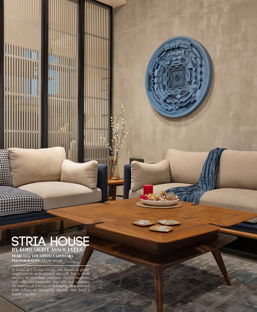

Architectural Disciplines &
Interior Craftsmanship.
Residential Interior Design
Sanctuaries of quiet elegance, tailored around the daily rituals, tactile sensibilities, and personal narratives of each homeowner.
Featured in Volume Zero Architecture Magazine for projects like Pramukh Villa in Vadodara, our residential interiors celebrate biophilic integration, grey baisan wall finishes, natural teakwood joinery, and peaceful transitions between interior comfort and shaded outdoor living.

Commercial & Workspace Interior Design
Inspiring corporate environments, boutique developer offices, and executive pavilions that balance operational efficiency with earthy materiality.
As featured in Volume Zero Architecture Magazine for Isha Developer’s Site Office in Vadodara, we design functional commercial environments featuring sloping clay masonry roof profiles, Kota stone floors, and custom overhead cast-iron jalis that temper sunlight and cast rhythmic shadow patterns across open workbenches.

Architectural Design
Contextually responsive architecture crafted to harmonize with the climate, sunlight, and cultural landscape of Gujarat.
Our architectural practice encompasses bespoke residences including the FOAID-recognized VAIRAAG House in Bill, Vadodara. We pair bold monolithic forms, deep cantilevered overhangs, exposed brick, raw concrete, and custom corten steel jalis that temper intense solar heat while admitting cooling cross-breezes.

Space Planning & Circulation
Strategic spatial choreography resolving vertical circulation, internal courtyard connections, and natural ventilation axes.
As exemplified in Shayonam, our 4-level family residence featured in Volume Zero, we anchor vertical circulation around an east-facing light well that bathes central staircases in morning sun, seamlessly connecting garden level studio spaces, central water courts, and multi-generational private suites.

Furniture & Material Selection
Meticulous curation of raw tactile palettes, bespoke fluted wall claddings, and artisanal patina art installations.
As captured in Sopan 55 Show House (Bhayli, Vadodara) and featured in The Architect's Diary, we hand-select materials renowned for their timeless tactility: fluted wall paneling, carved teak veneers, soft textured neutrals, and bespoke metallic patina murals that serve as heroic focal points.

Lighting Design & Ambience
Harmonizing natural daylight harvesting with layered, glare-free architectural illumination for serene evening atmosphere.
Illustrated in Darshnam Ocean, we treat light as a sculpting medium. Carefully calibrated warm luminaire circuits, concealed linear coves, and delicate pendant fixtures illuminate rich textures without visual glare, creating an inviting nighttime sanctuary.

Let’s Create Something Timeless.
Discuss your upcoming residential residence, villa, or commercial project with our principal designers in Vadodara.
Inquire About Our Services